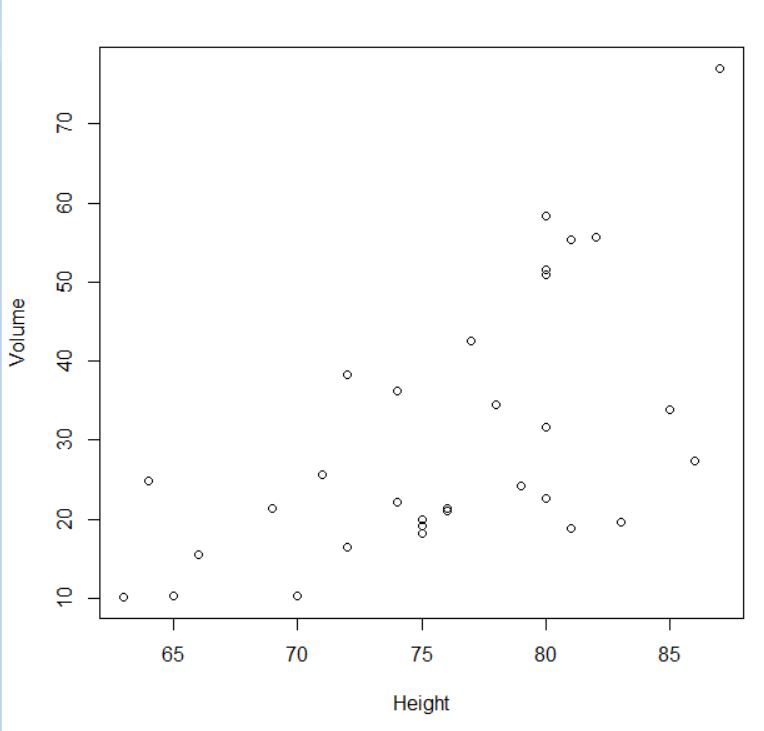
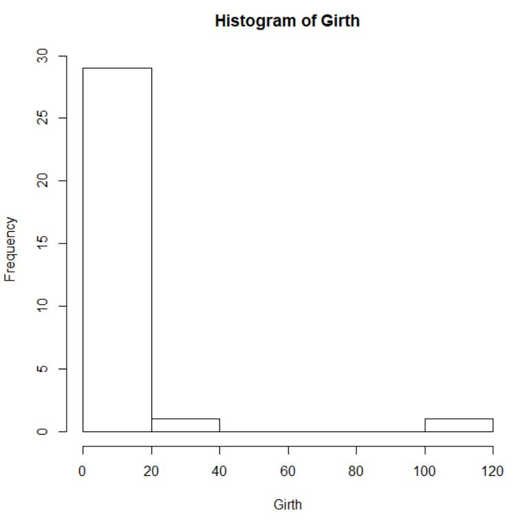
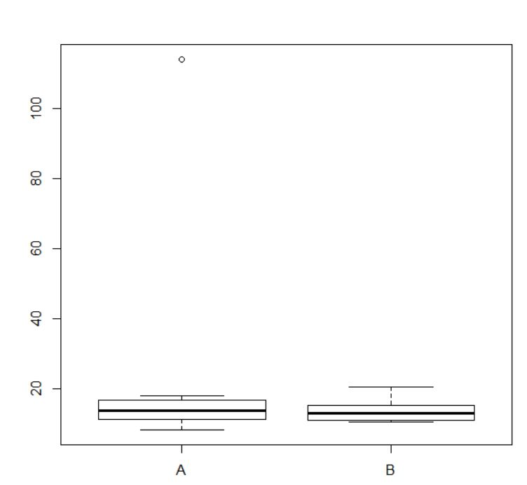

Tp1
Les vecteurs
Un vecteur est un tableau à une dimension, la fonction c() permet de le créer. Les données du vecteur doivent être toutes de la même dimension.
La fonction seq() permet que créer un vecteur contenant une suite de nombre entier.
ages<-
c(28,25,23,24,26,23,21,22,24,29,24,26,31,28,27,24,23,25,27,25,24,21,24,23,25,31,28,27,24,23)
ages
seq (2,6)
seq(1,10, by=0.5)
by = 0.5 signifie de 0,5 en 0,5
vecteur1 <- c(2,5)
vecteur1
vecteur2 <- c(2,6)
vecteur2
vecteur3 <- c(vecteur1, vecteur2)
vecteur3
vecteur1[2]
La fonction c() permet aussi de concaténer des vecteurs
La fonction [x] permet d'accéder à un élément du vecteur
vecteur1[vecteur1 >2]
length(vecteur1)
length(vecteur1[vecteur1 >2])
La fonction length() permet de connaïtre la longueur d'un vecteur/tableau
Les matrices (tableau à deux dimensions: données du même type)
La matrice possède un nombre de ligne nr et un nombre de colonne nc
matrice <- matrix(c(1.5,2.1,3.2,1.6,1.4,1.5),nr = 3, nc = 2)
matrice
matrice[1,1]
matrice[1,]
matrice[2:3,1:2]
Elle peut donner une "sous matrice" comme ici correspondant aux éléments de la 2e et 3e ligne, 1ere et 2e colonne
Les listes (tableau à une dimension : données de différents types)
liste <- list("AH",55,45)
liste
Les tableaux de données
Chaque colonne donne un attibrut différent et chaque ligne correspond à un individu différent
tab <- read.table("trees.csv", sep=",", header = TRUE)
tab
tab <- read.table(file = "trees.txt", row.names = 1, sep='\t', header = TRUE)
tab
tab2 <- read.table("trees_modif.txt", sep="\t", header = TRUE, row.names = 1)
tab2
header = TRUE signifie que la première ligne du fichier contient les noms des colonnes
names(tab)
ls(tab)
ls()permet d'afficher une liste simple des objets en mémoire, seuls les noms des objets sont affichés
dim(tab)
dim() donne la dimension de la matrice
summary(tab)
tab <- read.table("trees_modif.txt")
tab
tab[1,2]
tab[1,"Height"]
tab[1,]
tab[,"Girth"]
tab$Girth
tab[tab$Girth>12,]
tab[tab$Girth ==12,]
subset(tab,Girth ==12.9)
sub <- tab[tab$Girth ==12,]
sub
attach(tab)
detach(tab)
attach(tab2)
attach() permet de définir le tableau par défaut
tab["Girth"]
summary(tab)
ncol(tab)
ncol() donne le nombre de colonne d'un tableau
nrow(tab)
nrow() donne le nombre de ligne du tableau
mean(Girth)
median(Girth)
var(Girth)
sd(Girth)
sd() donne l'écart-type
mean(Girth, na.rm = TRUE)
na.rm = TRUE signifie qu'il ne faut pas tenir compte des valeurs NA pour ce calcul
Représentation graphique
plot(Species)

plot(Volume~Height)

plot(Girth~Species)

plot(x=Species, y=Volume, main= "Volume des arbres en fonction de leur hauteur", xlab = "Hauteur", ylab ="Volume")

hist(Girth)

hist(Girth,freq=F)

boxplot(Girth)

boxplot(Girth~Species)

par(mfrow=c(1,))
par(mfrow=c(1,2))
mfrow() permet d'affiche plusieurs graphes
boxplot(Girth, Height, Volume)
box<-c("Girth","Height","Volume")
boxplot(Girth,Height,Volume,names=box)

Exercice
tab <- read.table("herbicide.csv", sep=',', header = TRUE)
tab
summary(tab)
dim(tab)
sans <- subset(tab, herbicide == "aucun")
sans
herb1 <- subset(tab, herbicide == "herbicide1")
herb1
herb2 <- subset(tab, herbicide == "herbicide2")
herb2
herb3 <- subset(tab, herbicide == "herbicide3")
herb3
box2 <- c("sans","herb1","herb2","herb3")
box2
boxplot(main="survivants par facteurs",xlab= "herbicides", ylab = "nombre de survivants", names= box2, sans$survivants, herb1$survivants, herb2$survivants, herb3$survivants)
boxplot
mean(sans$survivants)
mean(herb1$survivants)
mean(herb2$survivants)
mean(herb3$survivants)
points(1,mean(sans$survivants), pch = 16)
points(2,mean(herb1$survivants), pch = 16)
points(3,mean(herb2$survivants, pch = 16)
points(4,mean(herb3$survivants, pch = 16)